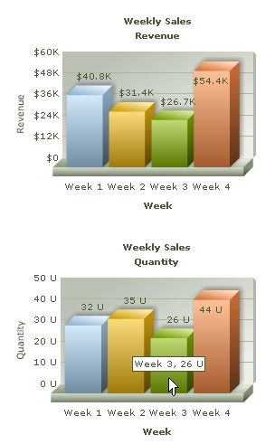

FusionCharts ASP Class API > Creating multiple charts in one page |
While developing web pages or applications, we may need to display multiple charts on the same page. For example, reporting Weekly Sales Quantity along with Revenue gives us a better insight. Let's see how we can accomplish this using FusionCharts ASP Class. The code below generates two Column 3D charts on the same page. |
Before you go further with this page, we recommend you to see the previous page "Creating First Chart " as we start off from the concepts explained in that page. |
<%@LANGUAGE="VBSCRIPT"%> dim strParam ' Set chart attributes ' Add chart values and category names for the First Chart '---------- Configuring Second Chart ---------- ' Set chart attributes ' Add chart values and category names for the second chart %> <% ' Render Second Chart with JS embedding Method %> </body> |
Let's go through the steps involved in this code:
|
| Please go through FusionCharts ASP Class API Reference section to know more about the functions used in the above code. |
| Here is the output. Both the charts have been rendered on the same page. |
|  |
| NOTE: ASP automatically generates an ID using Session and assigns it to the chart. This id is generated using a counter variable kept in session. Hence, one every page refresh new ID would be assigned to chart. One should provide anID, using setID() function, if one wishes to interact with the chart later using JavaScript APIs like setDataXML(), setDataURL(), print(), saveAsImage() etc. |